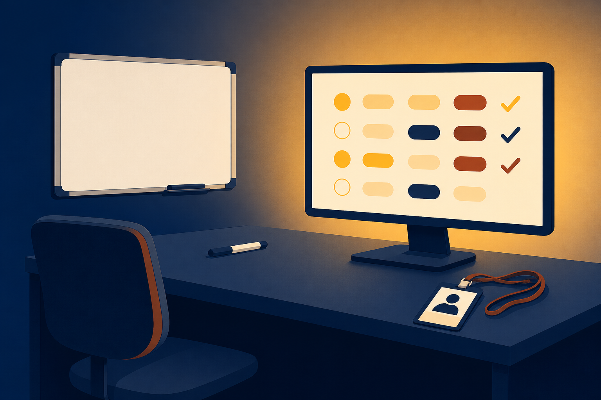

11.1
Demonstrate
comprehensive knowledge across the five A+ Core 1 domains.

Practice exams, score reports, and the strategy that carries you into the Core 1 exam.
Start here: Ninety minutes, up to ninety questions. What would you do in the first two minutes?
comprehensive knowledge across the five A+ Core 1 domains.
exam results to identify personal strengths and improvement areas.
test-taking strategies across every question format.
Mobile Devices, Networking, Hardware, Virtualization and Cloud, or Troubleshooting?
Commit with a partner:
Rank your top two before you peek. Where would you bet your review hours?
Exact questions stay protected. The exam objectives list every topic the questions can draw from.
Hardware plus troubleshooting: 53%. Weight your review hours the same way.
Nothing on these exams is new. The review is a second pass over ground you already walked.
The practice exams mimic the testing environment without the pressure. Use them as instruments, not verdicts.
One practice run rides the rest of class. The report is not a verdict. It is a map.
Ten points under the line. Now what?
Read the domain results.
The report lists what each question tested.
The mapping chart names the lessons.
Review those lessons, not everything.
Fresh questions test the same ground.
For the traced run: the report flags cable and display objectives, and the chart points back to chapter 4.
A laptop will not join Wi-Fi. Which is the BEST first step?
From the CompTIA store.
Pearson VUE: center or home.
One with a photo.
Notes stay outside. Lockers hold your things.
On screen before you leave. Keep the report.
A chapter 4 review, a fresh set of questions, and the same line to clear. This is the loop working.
No wait for attempt two. The third adds one.
B.1.1 why certify, B.1.2 exam details, B.1.3 how to take it, B.1.4 exam tips, plus the chapter reviews on the preparation map.
Five practice exams, one per domain, and the B.3 discussion: The Future of Computer Hardware, due Thursday.
Which domain weighs most, and what is its share?
What score passes a practice exam, out of 20?
Your first three moves after a 70% attempt?
Next step: Post in the B.3 discussion, The Future of Computer Hardware, by Thursday. Clear Core 1, and BPC270 carries you to Core 2 and the full A+ credential.